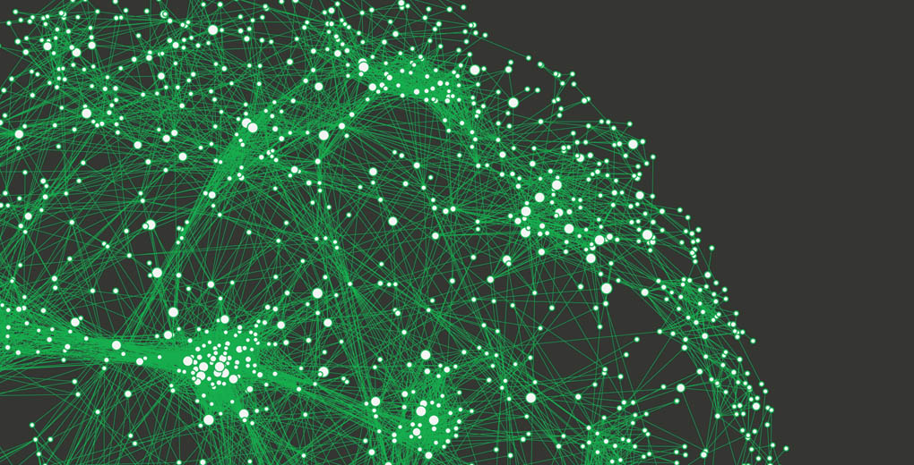

Associated with Rutgers University

Completed this project as part of the final project for CS 527 - Database Systems for Data Science. This is multi-page web application that replicates Ebay. A User
can create and participate in auctions, and compete in bidding wars on items in the auction.
Associated with Rutgers University

Completed this project as part of the final project for CS 520 - Introduction to Artificial Intelligence. In this project, code for feature extraction of digit and face data
was developed, following which, Naive Bayes and Perceptron was successfully implemented from scratch.

Created a single-page web application to post/read/update/delete notes. A User can create notes and perform CRUD operations when required.
Associated with NMIMS University

Hosted a static website in an S3 bucket and in an EC2 instance. Used services like Route53 for routing and CloudFront for better distribution.
Associated with NMIMS University

Applied several convolutional neural networks and also transfer learning (VGG16) to classify bacteria images correctly into their distinct classes.
A highest accuracy of 98% was obtained using VGG16 transfer learning.
Associated with NMIMS University

Used machine learning algorithms to perform customer segmentation, customer churn analysis and sentiment analysis.